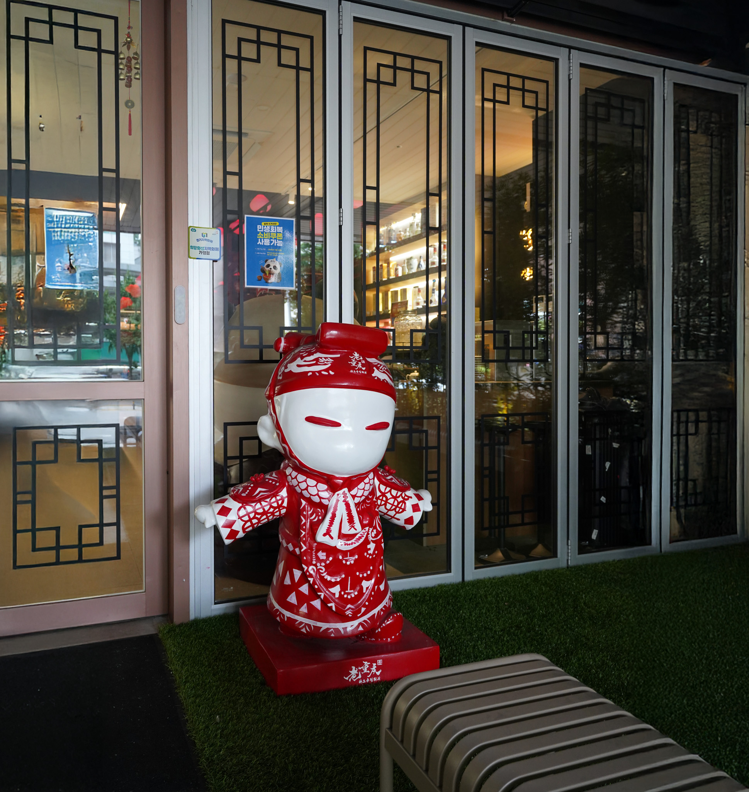

제목: 우리는 왜 병마용 인형을 입구에 세웠을까?
입구에서 마주하는 마스코트
라오충칭훠궈 매장에 들어서면, 병마용 스타일의 갑옷을 입은 판다 마스코트가 가장 먼저 손님을 맞이합니다. 친근한 판다의 표정과 병마용의 기품이 하나의 캐릭터 안에 공존해, 우리 브랜드의 유머와 전통이 동시에 전해집니다.

훠궈와 병마용의 역사적 연결고리
훠궈의 기원은 진·한 시대로 거슬러 올라간다는 설이 있습니다. 전장에서 큰 솥에 재료를 넣고 끓여 먹던 모습이 훠궈의 원형이 되었고, 병마용은 바로 그 시대의 병사들을 상징하는 유물입니다. 그래서 우리는 병마용의 상징성을 차용하되, 판다라는 친근한 캐릭터와 결합해 전통과 즐거움을 한 몸에 담았습니다.
브랜드에 담긴 메시지
병마용 복장의 판다는 “전통의 맛을 지키겠다”는 약속과 “편하게 즐기라”는 환영을 동시에 전합니다. 입구의 단 하나의 캐릭터가 라오충칭훠궈의 철학, 즉 전통과 즐거움의 공존을 직관적으로 전달합니다.
“국물은 이미 진하게 우렸어. 곱빼기는 서비스야.” — 병마용 복장의 판다(상상 멘트)
“그리고 디저트까지 챙겨줄게!” — 같은 판다의 속마음(상상 멘트)
“그리고 디저트까지 챙겨줄게!” — 같은 판다의 속마음(상상 멘트)



다음 방문 때 해보세요
입구에서 병마용 복장의 판다와 함께 사진을 찍어보세요. 그 순간, 전통과 즐거움의 공존이 그대로 한 컷에 담깁니다.